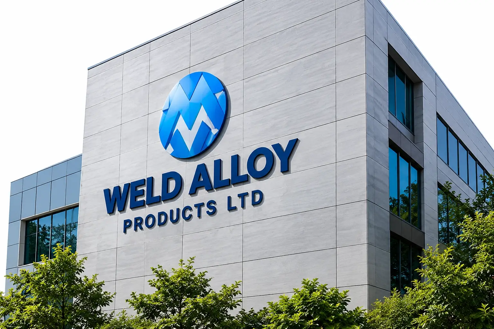

Industry content
Application challenges, materials, welding processes and support requirements for Heavy Engineering.
Discuss an application →Industry Solutions
Consumables and welding support for heavy fabrication, equipment manufacturing, repair and demanding structural applications.

Industry solution
Consumables and welding support for heavy fabrication, equipment manufacturing, repair and demanding structural applications. Final project references and customer-approved imagery can be added through the content approval process.
Application challenges, materials, welding processes and support requirements for Heavy Engineering.
Discuss an application →Browse welding consumables by process, material and service condition.
Explore consumables →Approved project story, measurable result and photography can be placed here once released.
View case studies →| Base material / grade | Project-specific |
|---|---|
| Welding process | Project-specific |
| Component / joint | Project-specific |
| Service environment | Temperature, wear, corrosion or load conditions as applicable |
| Qualification / approval | Project specification |